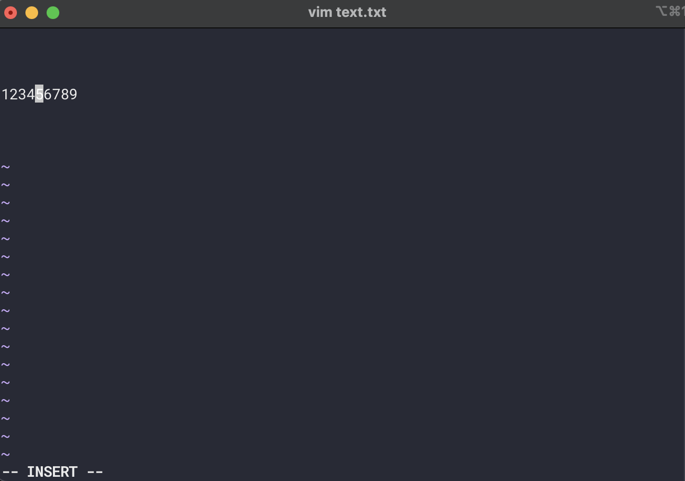
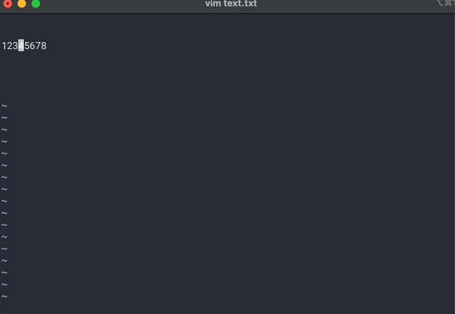
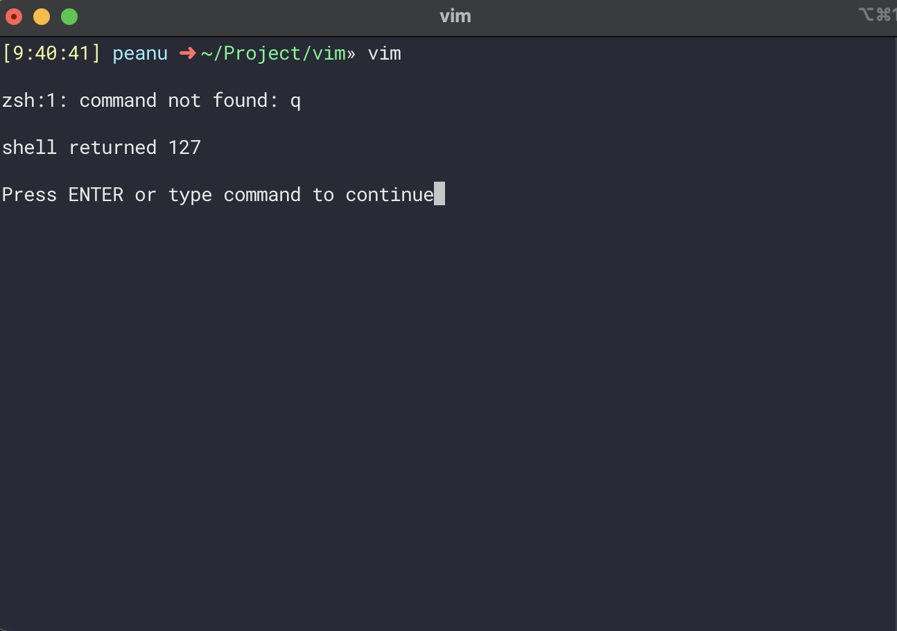
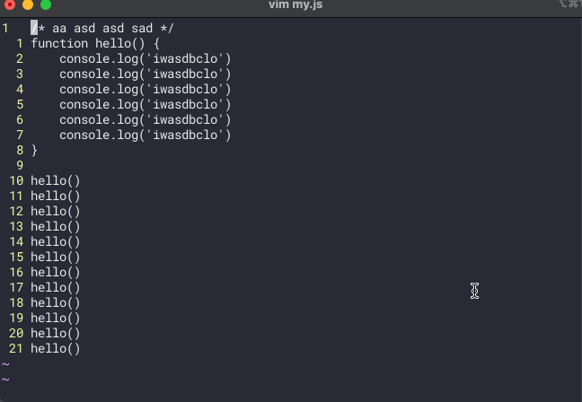
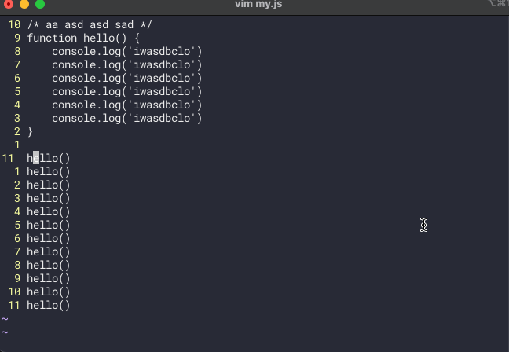
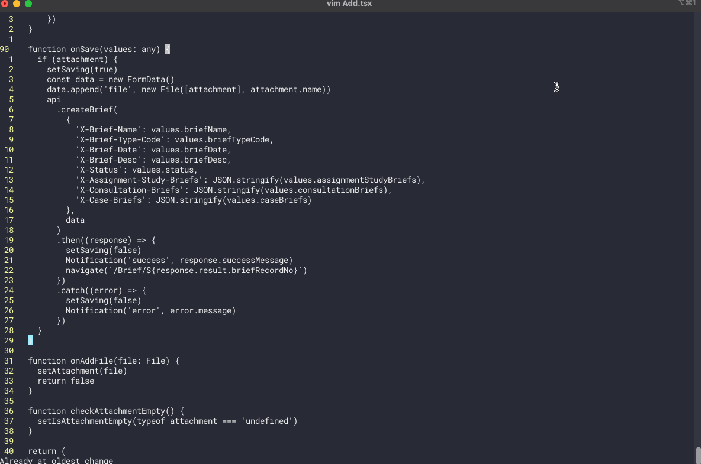
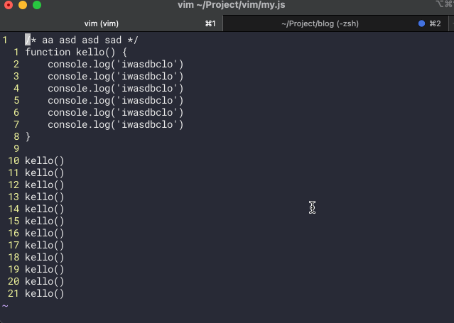
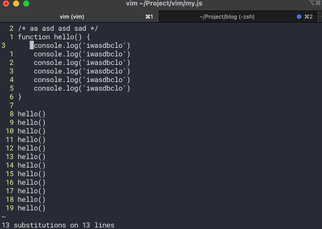
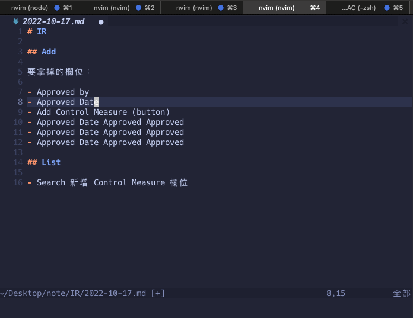
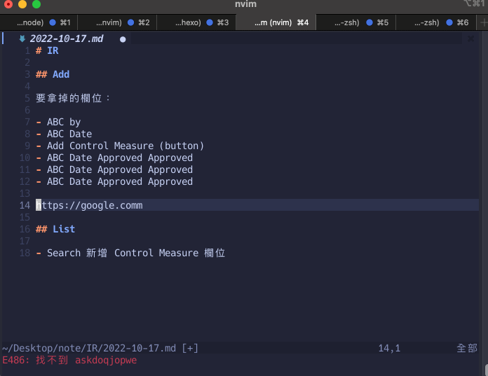

傳說中的 vim。
Vim 的三種模式
基本上 Vim 會有三種模式，分別是：
- 普通模式（Normal Mode）
- 插入模式（Insert Mode）
- 選取模式（Visual Mode）
在一開始進入 vim 的時後預設會是普通模式，在這個模式中每一個鍵會有不同的功能，像是 d 可以用來刪除一排文字，a、o、 i 可以用來進入插入模式等等。
除此之外在普通模式中可以用 : 來下指令，所以最簡單的例子就是在普通模式中用 :q 下一個「我要離開」的指令，vim 接收到指令後才會帶你離開。
至於插入模式就是純粹的讓你「輸入任何文字」，每一個鍵就是單純代表某一個字，不像普通模式一樣會具有特定的功能。
順道一提，要從插入模式回到普通模式的方式很簡單：只要按下 ESC 或 Ctrl + [ 就行了
最後是插入模式，這個說穿了就只是讓你可以像滑鼠一樣做「選取」的動作而已。
其實可以插到你想插的地方
前面有提到 a、i、o 這三個鍵都能用來進入插入模式，但這其實這不是什麼為了防呆來配置的各種快捷鍵，而是他們插入的方式不太一樣。
假設這是目前的狀態（注意游標的位置在 5）：

接下來如果我按下：
i，vim 就會自動幫我把游標插入到 5 的前面a，vim 就會自動幫我把游標插入到 5 的後面o，vim 就會自動幫我把游標插到下一行的位置
（我在進入後輸入的文字是表示目前是用哪個鍵來進入的，你只要注意我輸入後出現的位置在哪就好，這個就是上面的意思）

此外 A、I、O （可以搭配 shift）也可以用來進入插入模式，不過又會是另外一種插入的方式，但概念上都跟前面差不多。
離開 Vim 的方法
在你還沒有輸入任何東西以前，可以用 :q 來離開。
可是一旦你進入「Insert 模式」並打了任何一個字，你就得用 :q! 來告訴 Vim 你不想保留任何修改，讓我離開就對了。
否則會出現這個警告：
1 | E37: No write since last change (add ! to override) |
都說了是 :q! 不是 :!q
在對這些指令不熟的時候常常會把指令給記錯，像我就很常把 :q! 打成 :!q，結果就會跳到這個奇怪的畫面：

後來發現其實 :! 的用途其實是「我要執行 Terminal 相關的指令」，所以當你執行 :!q 的時候就等同於直接在 Terminal 上執行 q 這個指令的意思，所以上面才會跳一段：
1 | zsh:1: command not found: q |
就是在跟你說「沒有 q 這個指令哦」的意思。
所以 :q! 跟 :!q 雖然長得很類似，但實際用途卻是天差地遠，這一點要特別記住。
編輯器相關的設定
:set number顯示行數（絕對位置）:set relativenumber顯示行數（相對位置）:set mouser=a開啟滑鼠功能（點擊、選取）set tabstop=2tab 的寬度set shiftwidth=2縮排的寬度（通常會跟 tabstop 一樣）colorscheme default主題色syntax on語法高亮set expandtab把 tab 替換成空白鍵
如果要套用為全域設定的話可以在 ~/.vimrc 中建立檔案，並填入內容：
1 | set number |
普通模式中的相關的熱鍵
d刪除D刪除游標後剩下的文字y複製（yanking）p貼上（paste）u取消動作（Undo）r替換單個文字（replace）w跳到下個單字（word）w跳到下個單字（依據空格來跳）b跳到前一個單字（back word）B跳到前一個單字（依據空格來跳）e跳到單字的最尾端（end of word）$跳到行內的終點（可以想成正則表達的 $）g_跳到行內的終點（可以想成正則表達的 $）0跳到行內的起始點（會回到那一行的最起點，無視縮排）^跳到行內的起始點（跟 Home 鍵一樣的位置）_跳到行內的起始點（跟 Home 鍵一樣的位置）%跳到成對符號起始 or 終點（例如{）t*跳到*的前一格（until）f*跳到*的位置（find）dd刪除整行yy複製整行cc只清除但不刪除行數，並開啟插入模式（change）gg跳到檔案的最後一行（good game）zz自動聚焦到畫面中央（根據游標位置）ctrl + rredo-shift + g跳到檔案的第一行（shit game）shift + v一次選取一行ctrl + v選取多個區塊=G對整個檔案做 indent<< / >>往前 / 後 indent（單行）m + <記憶鍵>設定記憶點（行數）' + <記憶鍵>跳回記憶點（行數）" + * + y把內容複製到系統的剪貼板（這樣才能貼到其他地方）<number> + gg跳到指定的行數gu / gU快速切換大小寫~把目前游標上的字轉換成大小寫
組合技
dw刪除單字d2w刪除兩個單字diw刪除游標內的單字（delete inner word）ciw修改游標內的單字（change inner word）yiw複製游標內的單字（yank inner word）ci(改變(內的文字（👍）yi(複製(內的文字（👍）di(刪除(內的文字（👍）(行數) + G跳到指定的行數（或是直接下指令:行數）:norm $a,對選取的區塊執行這個動作（在最後面 appren 一個逗號）:! sort把選取的文字做排序（unix only）gf對目前檔案裡的路徑（字串）執行後就能打開那個檔案*cgn.替換掉多組相同的單字（詳細可以參考這篇）f<letter>;當你用f+<letter>找到第一個字不是你想要的那一個，可以按;來重複這個動作
搜尋
要在 vim 裡面搜尋文字的話可以在普通模式中下「/ + 關鍵字」，就可以根據關鍵字來搜尋所有符合的文字。
如果要往下尋找可以按下 n，往前尋找可以按下 N。

或者是我想搜尋目前游標附近的單字，可以在那個單字旁邊用 * 或 # 來自動搜尋這個單字：

附註：* 是往下找，# 是往上找。
搜尋好了，可以不要再 highlight 了嗎？
有些主題可能會自動把 match 的文字給 highlight 起來，這個是好功能是沒錯，但前提是不要在我已經經取消搜尋了還持續 highlight。
總之碰到這種問題的時候你可以重新用 / 搜尋一串無意義文字就能取消了。
跳躍到上個記憶點
這招我覺得很值得學所以特別列一下，簡單來說就是你可以用 m + <記憶點> 來把這個行數給記起來，接著當你想跳回記憶點的時候只要用 ' + <記憶點> 就可以馬上跳回那當初的行數。
直接來看示範：

先原諒我這時候還不會設定 highlight，所以看起來很傷眼 QQ，不過這邊的重點是我先在 onSave 和 onAddFile 各別設定了記憶點，接著當我跳到其他地方要再跳回去時，我只要下：
1 | ' + <記憶點> |
就可以馬上跳回我當初記憶的地方，這個功能真的超方便的啦~
取代檔案中的所有文字
簡單來說就是對檔案中的字串做全域修改，用法是：
1 | :%s/<舊字串>/<新字串>/g |

或者我也可以只選擇一個區塊來做修改：
1 | :s/<舊字串>/<新字串>/g |

順道一提，如果不加上 g 的話只會把每一行第一個符合的字給替換掉，像這樣：

如果要替換的字剛好是 / 的話，可以改用其他的分隔符（delimiter）來取代，比較常見的會是 #：
